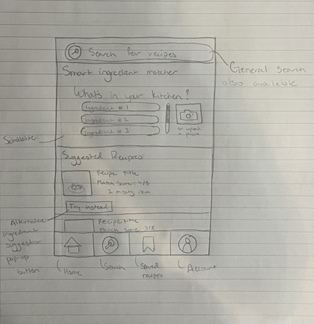
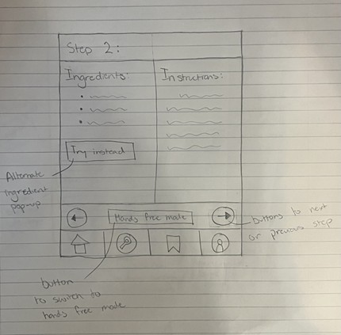
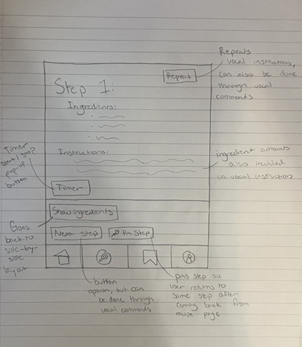

Cooking App
A user-centered redesign concept for the Allrecipes experience, developed as an interaction design course project.
Overview
User research identified three recurring sources of friction in the existing recipe experience: limited control over ingredient-based discovery, disruptive advertising, and an underdeveloped hands-free cooking mode. The redesign focused on making recipe discovery more relevant and supporting users more effectively while they cook.
The concept prioritizes ingredient matching, alternative ingredient suggestions, clearer recipe navigation, and hands-free controls designed for active kitchen use.
What I designed
I translated the research findings into early wireframes for recipe search, split-screen instructions, and hands-free step navigation. These sketches explored how users could search with ingredients already available, reference ingredients and instructions simultaneously, and advance through recipe steps without repeatedly touching the screen.
I then developed the search experience into a higher-fidelity Figma interface. The completed screen supports ingredient entry, photo-based input, match scoring, suggested recipes, and ingredient substitutions. The broader application remains an evolving design concept, with additional screens planned for future development.



